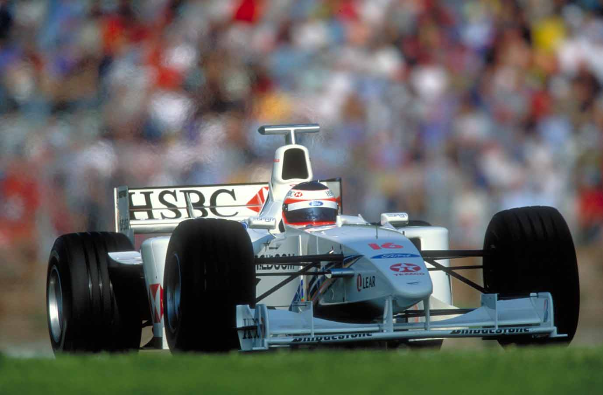
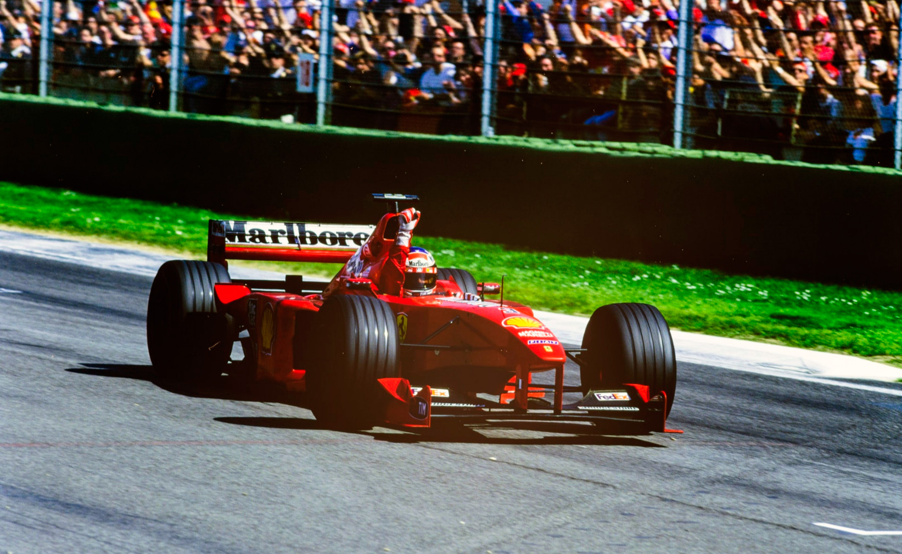
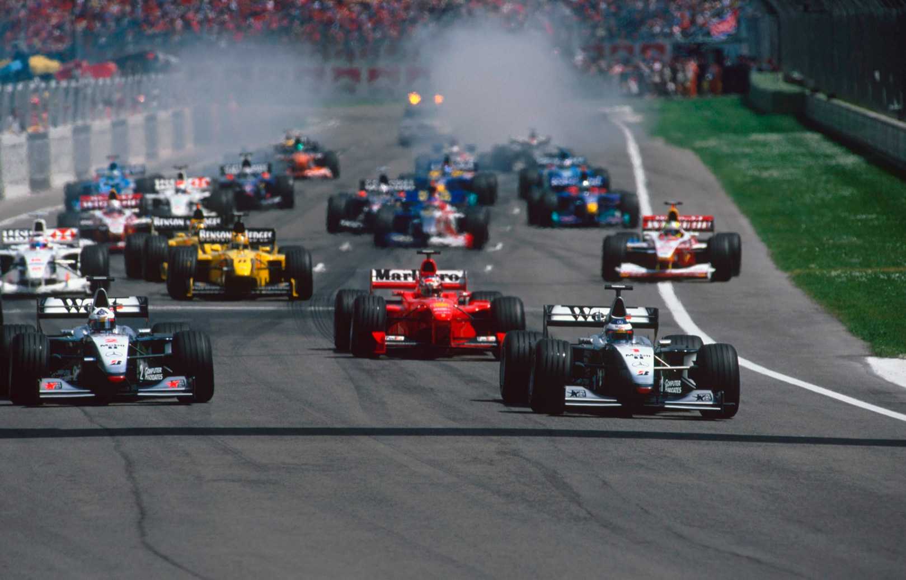
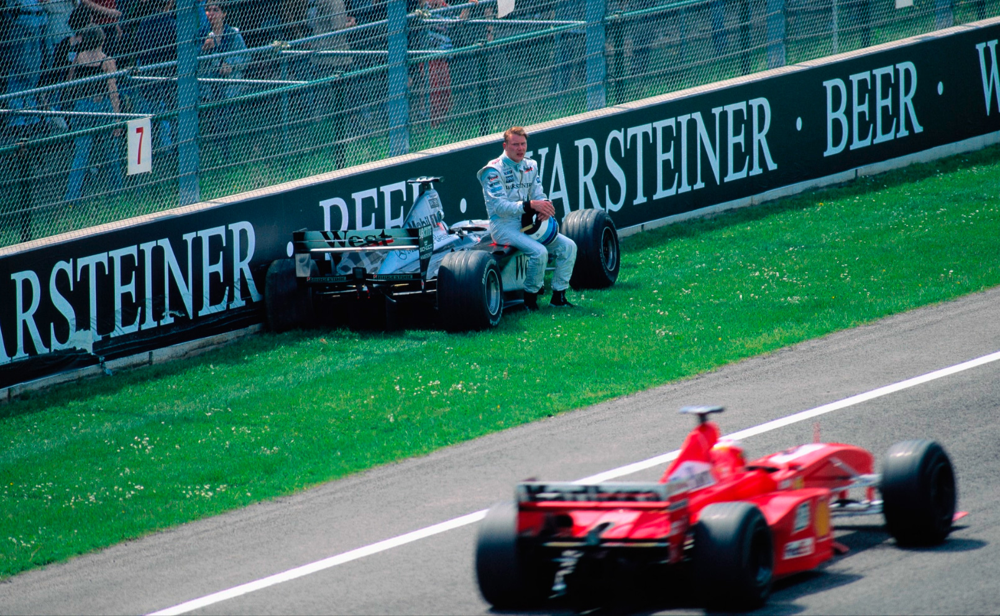
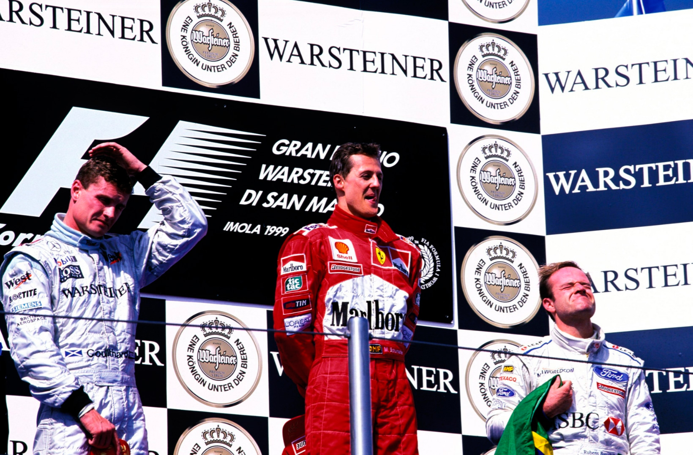

UM PÓDIO PARA SENNA

Cinco anos depois da morte de Ayrton Senna, Barrichello homenageia o tricampeão com o terceiro lugar em Imola:
Nos últimos cinco anos, Rubens Barrichello vinha comendo o pão que o diabo amassou. De jovem revelação, assumiu de repente a condição de sucessor de um dos maiores pilotos de todos os tempos, sucumbiu sob a pressão da mídia e do público, saiu de uma equipe média para uma estreante, afastou-se da luta pelas primeiras colocações e virou motivo de piada até dos humoristas da emissora que transmite as provas pela TV para o Brasil. Pois em Imola, um lugar emblemático, o piloto iniciou uma nova fase em sua carreira, dedicando o terceiro lugar no GP de San Marino àquele que sempre foi seu ídolo e que, quando morreu, já era considerado um amigo. Ayrton Senna foi a pessoa mais lembrada por Barrichello depois do pódio na mesma pista que matou o tricampeão mundial em 1º de maio de 94. “Não é uma coincidência que isso aconteça aqui. Foi aqui que minha vida deu uma virada para pior há cinco anos, onde passei minha maior decepção, onde mais me machuquei. E é aqui que quero dedicar este pódio a ele, tinha que ser aqui”, falou Rubinho. com os olhos vermelhos, no dia em que se tornou o quarto melhor piloto brasileiro da F-1. ultrapassando em pontos José Carlos Pace. Ele estava empatado com o “Moco” com 58 pontos e chegou a 62 pontos acumulados desde 93. “Chorei muito no carro, sim, e berrei muito também. Sou muito emotivo, os brasileiros são assim. Tenho certeza que Ayrton estava aqui comigo, torcendo para que eu conseguisse esse resultado. Senti que ele estava aqui.”

Foi um domingo de fortes emoções em Imola. A vitória ficou com Michael Schumacher, da Ferrari. O time italiano não ganhava uma corrida no circuito desde 83, com Patrick Tambay. Cerca de cem mil pessoas foram ao delírio quando seu maior rival, Mika Hakkinen, cometeu um erro bobo e bateu seu McLaren no muro na reta dos boxes, quando liderava a prova com 13s de vantagem sobre o segundo colocado, na 17ª volta. “Foi um erro meu e pronto”, disse o finlandês. “Nossos pilotos não costumam errar, não vou culpar Mika por isso”, contemporizou o chefão Ron Dennis. Ainda à frente de Rubinho chegou David Coulthard, da McLaren. Mesmo com uma parada a menos nos boxes, o escocês não foi adversário para o alemão, que fez dois pit stops, decidindo pela estratégia no meio da corrida. Fecharam a zona de pontos Damon Hill (Jordan), Giancarlo Fisichella (Benetton) e Jean Alesi (Sauber). Para subir ao pódio pela quarta vez em seus 99 GPs de F-1, Barrichello fez uma corrida sem erros, com uma tática clássica de dois pit stops. Não largou bem — era o sexto no grid —, mas recuperou as posições perdidas ainda na primeira volta com uma sequência de boas ultrapassagens sobre os dois carros da Jordan e o Williams de Ralf Schumacher. Na verdade, Rubinho não tinha carro para chegar em terceiro, como ele mesmo dissera na véspera, se todos os favoritos terminassem a prova. Mas alguns deles foram ficando pelo meio do caminho e, no fim, a sorte que faltou em Interlagos acabou virando de lado em Imola. Com a vitória, Schumacher assumiu pela primeira vez no ano a liderança do campeonato, com 16 pontos, seis a mais que Hakkinen. ‘”É uma situação bem melhor do que no ano passado. Vencer em Imola com uma Ferrari é algo muito especial”, comemorou o alemão, que chegou à 34ª vitória de sua carreira.

Michael só venceu o GP de San Marino porque Ross Brawn, o homem que traça a estratégia de corrida do alemão, é capaz de mudá-la ao sabor dos acontecimentos. E o piloto transforma cálculos em resultados. Para entender o que aconteceu em Imola, é preciso conhecer antes as estratégias de cada um dos três candidatos à vitória. Hakkinen faria dois pit stops. Coulthard, um. E Schumacher, um ou dois. Nas primeiras voltas, Mika disparou na frente. Em 15 voltas, tinha mais de 15s de vantagem sobre Schumacher, o terceiro. Coulthard, com o carro mais pesado, mantinha-se à frente do alemão com uma diferença oscilando entre 3 e 4s. Quando Hakkinen se arrebentou no muro, Michael decidiu apertar o ritmo enquanto Brawn fazia contas. Para simplificar, a ideia do engenheiro era a seguinte: chamar Schumacher para um pit stop rápido, colocar pouca gasolina e deixar seu carro leve e veloz. Quando Coulthard parasse, o ferrarista faria sua parte, construindo uma vantagem que lhe permitisse parar mais uma vez. E aconteceu assim. Primeiro, Michael foi para os boxes, na volta 31, quando já reduzira sua distância para o escocês para 1s. Em 6s9 os mecânicos da Ferrari o devolveram à pista. David abriu 19s3. Na 35ª, foi a vez de a McLaren chamar seu piloto. Trabalho demorado, 9s2. Quando voltou, Coulthard estava 5s2 atrás de Schumacher. Ainda assim, era preciso acelerar, porque faltava um pit stop, Schumacher o fez. E contou com inépcia de Coulthard, que não conseguiu passar retardatários e perdia um tempo enorme por volta. A diferença cresceu para 13s na 39ª volta, 15s6 na 40ª, 19s1 na 41ª e era de 21s8 na 44ª. Dava pra fazer o pit stop e ainda tomar uma Coca-Cola. Schumacher parou, voltou em primeiro e ficou na ponta até o final. “Era óbvio para mim que eles tinham estratégias diferentes”, explicou Schumacher. “Eu não queria deixar o David abrir muito e poupei o carro no início esperando o melhor momento de atacar. Nossa estratégia nos dava duas opções. Foi Ross quem decidiu o que fazer, ele é muito bom nisso. Eu sabia que se parasse só uma vez chegaria em segundo, depois que o Mika abandonou. Parar duas vezes me daria uma possibilidade de ganhar se eu conseguisse construir uma boa vantagem, e, mesmo se isso não acontecesse, eu chegaria em segundo do mesmo jeito. Não havia muitos riscos, então fomos para os dois pit stops. Deu certo.”

Michael só venceu o GP de San Marino porque Ross Brawn, o homem que traça a estratégia de corrida do alemão, é capaz de mudá-la ao sabor dos acontecimentos. E o piloto transforma cálculos em resultados. Para entender o que aconteceu em Imola, é preciso conhecer antes as estratégias de cada um dos três candidatos à vitória. Hakkinen faria dois pit stops. Coulthard, um. E Schumacher, um ou dois. Nas primeiras voltas, Mika disparou na frente. Em 15 voltas, tinha mais de 15s de vantagem sobre Schumacher, o terceiro. Coulthard, com o carro mais pesado, mantinha-se à frente do alemão com uma diferença oscilando entre 3 e 4s. Quando Hakkinen se arrebentou no muro, Michael decidiu apertar o ritmo enquanto Brawn fazia contas. Para simplificar, a ideia do engenheiro era a seguinte: chamar Schumacher para um pit stop rápido, colocar pouca gasolina e deixar seu carro leve e veloz. Quando Coulthard parasse, o ferrarista faria sua parte, construindo uma vantagem que lhe permitisse parar mais uma vez. E aconteceu assim. Primeiro, Michael foi para os boxes, na volta 31, quando já reduzira sua distância para o escocês para 1s. Em 6s9 os mecânicos da Ferrari o devolveram à pista. David abriu 19s3. Na 35ª, foi a vez de a McLaren chamar seu piloto. Trabalho demorado, 9s2. Quando voltou, Coulthard estava 5s2 atrás de Schumacher. Ainda assim, era preciso acelerar, porque faltava um pit stop, Schumacher o fez. E contou com inépcia de Coulthard, que não conseguiu passar retardatários e perdia um tempo enorme por volta. A diferença cresceu para 13s na 39ª volta, 15s6 na 40ª, 19s1 na 41ª e era de 21s8 na 44ª. Dava pra fazer o pit stop e ainda tomar uma Coca-Cola. Schumacher parou, voltou em primeiro e ficou na ponta até o final. “Era óbvio para mim que eles tinham estratégias diferentes”, explicou Schumacher. “Eu não queria deixar o David abrir muito e poupei o carro no início esperando o melhor momento de atacar. Nossa estratégia nos dava duas opções. Foi Ross quem decidiu o que fazer, ele é muito bom nisso. Eu sabia que se parasse só uma vez chegaria em segundo, depois que o Mika abandonou. Parar duas vezes me daria uma possibilidade de ganhar se eu conseguisse construir uma boa vantagem, e, mesmo se isso não acontecesse, eu chegaria em segundo do mesmo jeito. Não havia muitos riscos, então fomos para os dois pit stops. Deu certo.”
